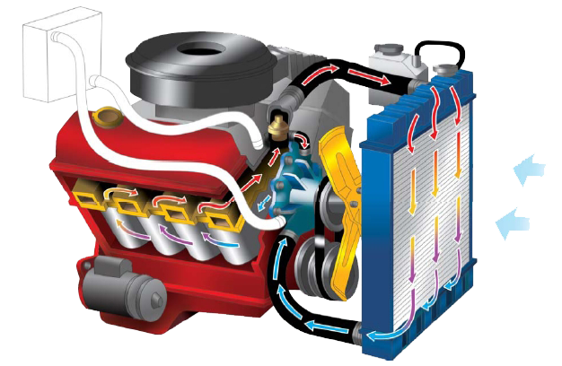

Revisão Periódica
Um dos sistemas que mais sofre com o trânsito louco das cidades é o de refrigeração. Isto porque solicita-se mais do motor, exigindo um desgaste maior. Se não houver uma revisão periódica e manutenção preventiva, o sistema tende a apresentar vazamentos, entupimentos ou problemas com a tampa, levando a aumento de pressão e, como consequência, o superaquecimento, que pode até fundir o motor. Isto acontece porque as detonações no interior do motor provocam temperaturas de 1.400 graus centígrados na câmara de combustão, que correspondem à temperatura de fusão do aço. Para arrefecer o motor, ou seja, para resfriá-lo, o sistema mais utilizado é o da refrigeração a água, bombeada pelo bloco do motor e cabeçote através de galerias, sendo constantemente resfriada pelo radiador.
A busca constante na manutenção preventiva gera a solução de problemas como vazamentos. Estes são encontrados em pontos específicos causados por abraçadeiras enferrujadas ou espanadas, mangueiras ressecadas, rasgadas ou furadas, radiador, reservatório de expansão, juntas de cabeçote ou mesmo selos do motor.
Encontrar estes vazamentos não é muito difícil, e para evitá-los é interessante proceder uma verificação completa a cada mês e uma limpeza a cada 15 ou 20 mil quilômetros dependendo das condições de uso do veículo.
A busca constante na manutenção preventiva gera a solução de problemas como vazamentos. Estes são encontrados em pontos específicos causados por abraçadeiras enferrujadas ou espanadas, mangueiras ressecadas, rasgadas ou furadas, radiador, reservatório de expansão, juntas de cabeçote ou mesmo selos do motor.
Encontrar estes vazamentos não é muito difícil, e para evitá-los é interessante proceder uma verificação completa a cada mês e uma limpeza a cada 15 ou 20 mil quilômetros dependendo das condições de uso do veículo.
Manutenção
Um cuidado a ser tomado por quem viaja, é o radiador. O nível de água deve ser observado. O ideal é que os motoristas recorram às oficinas especializadas, já que o problema pode ser um vazamento de junta ou entupimento.
Nas oficinas, troca-se a água do bloco, com um aditivo especial, à base de etileno glicol, com reposição, no máximo, em seis meses. O radiador não pode estar enferrujado. Caso isso ocorra, a tendência é de que a válvula termostática fique trancada, dificultando o funcionamento do veículo. Na estrada, se a temperatura da água estiver alta, recomenda-se parar o veículo, evitando assim, um superaquecimento, que ocasiona estouro da tampa do cilindro.
O radiador em bom estado, contribui para o bom rendimento do veículo e atua na economia de combustível.
Nas oficinas, troca-se a água do bloco, com um aditivo especial, à base de etileno glicol, com reposição, no máximo, em seis meses. O radiador não pode estar enferrujado. Caso isso ocorra, a tendência é de que a válvula termostática fique trancada, dificultando o funcionamento do veículo. Na estrada, se a temperatura da água estiver alta, recomenda-se parar o veículo, evitando assim, um superaquecimento, que ocasiona estouro da tampa do cilindro.
O radiador em bom estado, contribui para o bom rendimento do veículo e atua na economia de combustível.